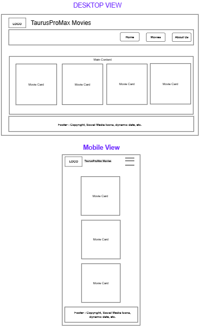

Taurus ProMax Movies
Site Purpose
This website will serve as an interactive hub for movie enthusiasts. It will provide information about current and upcoming movies. The site will allow users to explore movies and watch trailers. The goal is to create a dynamic, engaging, and responsive movie website that provides a seamless user experience.
Target Market
- Movie enthusiastis of all ages.
- Casual viewers looking for quick informatiuon on new movies.
Site Goal
- Delivera responsive and user-friendly interface for browsing movies.
- Dynamically display movie data from an API.
- Enable users to watch movies and view movie details in Modals
SEO - Plan
- Uses unique meta titles and descriptions for each page.
- Uses Open Grapn tags for social media previews.
- Uses favicon
- Navigation Bar
- Background-color: #1C1C1C;
- Text-color: #FFFFFF;
- Hover: #E53935;
#1976d2;
- Buttons
- Primary buttons-color: #E53935;
- Text-color: #FFFFFF;
- Hover: Background - #B71C1C;
- Cards / Sections
- Card bckground-color: #FFFFFF;
- Text-color: #1C1C1C; for titles,
#555555;for subtitles
- Page Backgroung
- Main: #F8F8F8; or
#EEEEEE;
- Main: #F8F8F8; or
- Links
- Default: #1976D2;
- Hover: #0D47A1;
- Others Colors:
- Color or typography might be adjusted as needed.
Pages
- Home Page (index.html)
- Featured movies
- Click and watch movies
- Movies Page (movies.html)
- Dynamically generate movies listing
- Each movie shows title and release date
- Modal dialogs with trailers and detailed info
- About / Contact Page (about.html)
- About TaurusProMax Movies
- Contact form with form action page
- HTML
- CSS
- JavaScript
- VS Code - IDE
- Git/GitHub - version control tools
- GitHub Pages - Live Deployment
Tools / IDE - Independent Development Environment
TaurusProMax Movies - Wireframe
